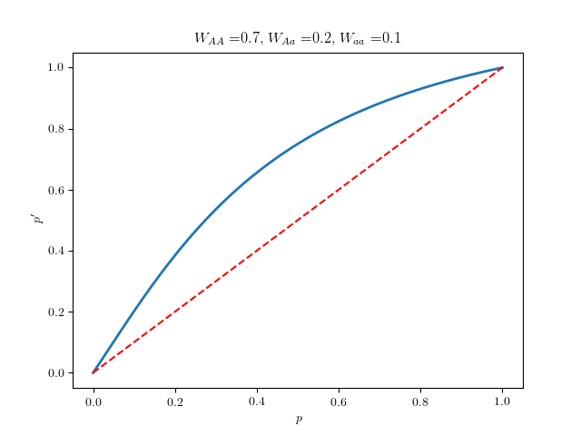
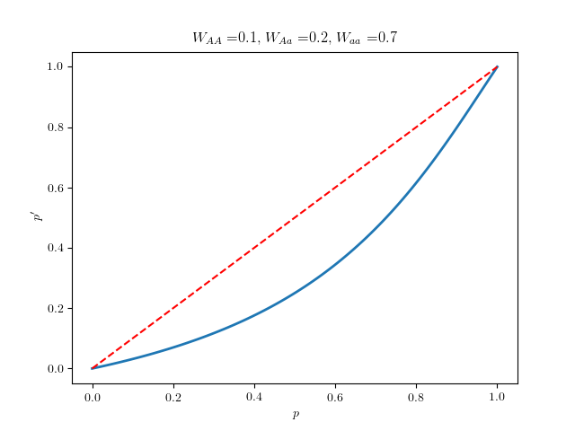
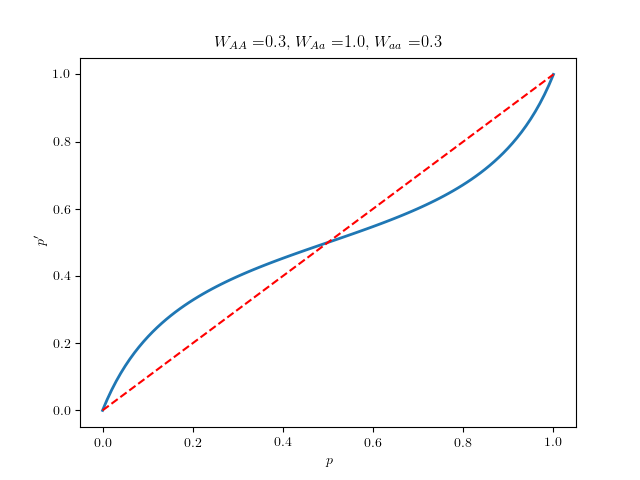
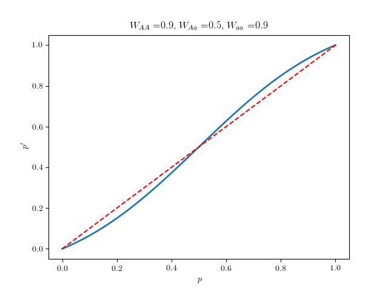

Theoretical Ecology
Simon A. Levin
Day 1
Models
A model is defined by Current state -> Next State (infer rules) -> Long periods -> asymptotic
There are three kinds of models: Predictive, Understanding, Managerial.
Evolution and Optimization
People think about evolution as a process of improvement. The first formal approach to this idea is Fisher's landscape / Adaptive landscape. For each genotype we associate a fitness, the idea is that evolution tends to optimize on the fitness.
Fisher's fundamental theorem:
Assumptions:
No immigration/emigration
No mutation
Large population (ignore stochastic effects)
Constant fitnesses
Random mating.
One locus (genotypes only at one place).
Diploid population.
Two alleles (two forms of a gene: A/B or A/a). Combination is order-independent
Probabilities: 2 alleles A,a, proportions: p, q=1−p. A new zygote will be:
AA→p2, after fitness selection AA→p2WAA.
Aa→2pq, after fitness selection Aa→2pqWAa.
aa→q2, after fitness selection aa→q2Waa.
If all fitnesses were 1 (no selection), the gene frequency doesn't change in the next pool (if we pick an individual at random and then a gene at random):
P[A]=1⋅p2+22pq+0⋅q2=p.
If there is fitness involved:
Mean fitness: W¯=p2WAA+2pqWAa+q2Waa. The mean fitness of each alleles are:
WA=pWAA+qWAa
Wa=pWAa+qWaa
Note that W¯=pWA+qWa.
What is the gene frequency after selection?
p′=P[→A]=W¯1⋅p2WAA+0.5⋅2pqWAa+0⋅q2Waa=p⋅W¯pWAA+qWAa=p⋅W¯WA
Similarly:
q′=P[→a]=q⋅W¯Wa
Cases:
WAA>WAa>Waa

WAA<WAa<Waa

WAA<WAa>Waa: Equilibrium

WAA>WAa<Waa: Disruptive Selection
